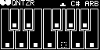

Note Change Trigger Out
Outputs a trigger whenever the current output note changes.
Trigger In
If the trigger setting is enabled, triggers a sample for quantization.
Pitch CV In
Unquantized pitch CV input.
Pitch CV Out
Quantized pitch CV output.